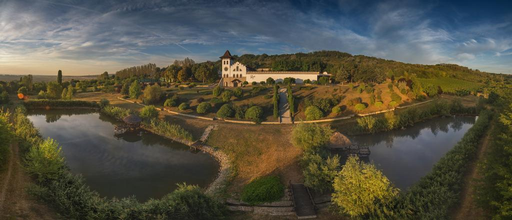
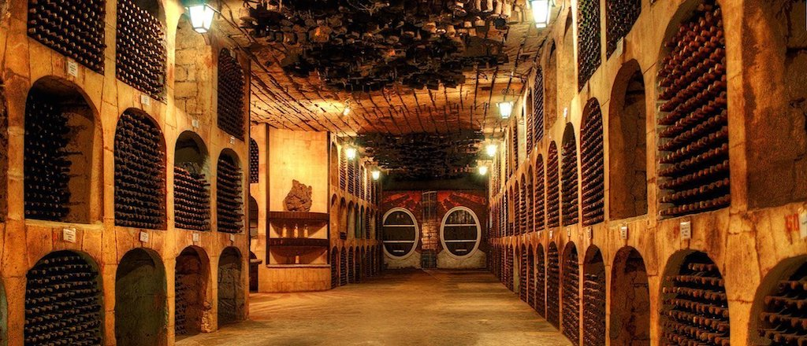
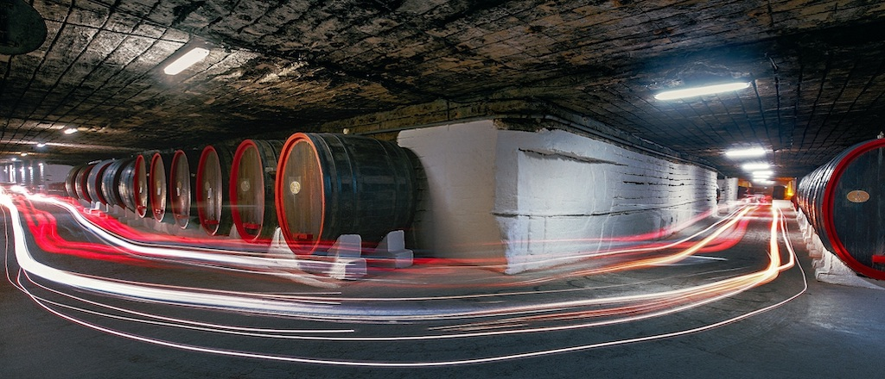
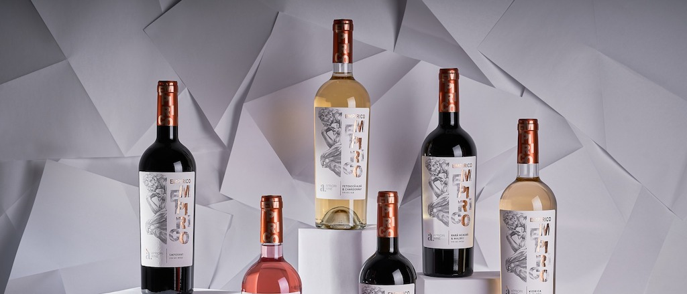

Vinaria Purcari
Colecția exclusivă de vinuri Purcari onorează marile culturi europene de vin cu vinuri excepționale, unice. Fie ca vrei sa te simti insorita in Italia cu un Pinot Grigio sau vrei sa te inspiri din rafinamentul Frantei cu un Cabernet Sauvignon, Purcari are alegerea potrivita. Mândria națională a Moldovei este îndrăgitul Rară Neagră, produs dintr-un strugure autohton cu același nume. Dacă, totuși, nu vă puteți decide asupra tipului de struguri, Rosé proaspăt și atrăgător este de încercat obligatoriu.

Vinaria Milestii Mici
Republica Moldova a obținut titlul de "ţara cu porțile deschise în paradisul vinului", deoarece producerea vinului este îndeletnicirea de bază a moldovenilor. Oricine intră aici este binevenit.
Departe de hotarele republicii este bine cunoscută, apreciată şi iubită producţia Combinatului de Vinuri de Calitate "MILEŞTII MICI", cel mai vechi loc de păstrare a "băuturii sacre". Loc ce păstreză minunea de la Mileștii Mici.

Vinaria Cricova
"Cricova" este cea mai mare întreprindere din Republica Moldova care produce vinuri spumante în conformitate cu metoda clasică franceză - "Methode Champenoise", prin fermetarea secundară în sticlă și cu o maturare ulterioară cuvee de 1-3 și mai mulți ani.
Combinatul de vinuri Cricova mereu a fost producătorul unor vinuri remarcabile, vinuri de calitate superioară, elaborate cu un singur scop: "de a vă trezi imaginaţia şi de a vă aduce placere".

Vinaria Apriori
Regăsești în vinurile noastre fragmente de țară, de emoții adevărate și desfătare, așa cum, de-a lungul anilor, cei mai talentați muncitori de la Apriori Wine n-au uitat de origini, dar au și continuat să fie într-un pas cu modernitatea. Această antitează este atu-ul companiei Apriori Wine care, îmbinând tradițiile vechi cu rețetele și formele noi de expresie, îți vor dărui vinuri de o calitate remarcabilă.